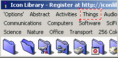
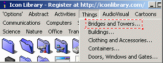
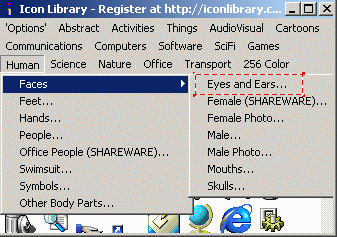
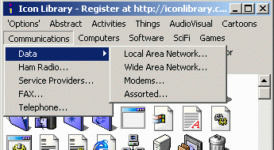

The menus used for selecting the various icon categories for
display are controlled by a configuration file called icolib.ini.
This file controls the layout of the menus, the descriptions for each
menu item, and the location of the associated ICL file for each
menu. This file also stores the size of the Icon Library window and its
position on the screen last time it was used. Future parameters
may also be stored in the icolib.ini file in later releases of
the software. In order to keep Icon Library self-contained there are
no parameters stored in the Windows Registry, with the exception
of providing an optional file type association of ICL files with
Icon Library so that double clicking on ICL files will start
Icon Library.
Why would a user have a need to customise the Icon Library menus?
Some possible reasons might be to...
Add new libraries of icons to the collection. Note that
changing, adding or deleting icons in existing ICL
files does not require any changes to the icolib.ini file.
Remove categories no longer required.
Re-arrange the menus so that more frequently used items are
near the top of the selections, or perhaps to make the menus
more intuitive for a particular user.
Change the descriptions on the menus.
Translate the menu descriptions to a foreign language.
Specify a new filename or pathname for ICL files.
When you make changes to the icolib.ini file, you can see
these changes immediately, without having to restart the Icon Library
viewer by selecting the Registered or NewMenu option.
The format of the icolib.ini is fairly straight forward
once you understand its basic structure. Each of the items in the main
menu bar of Icon Library are positioned and described by two lines in
this file. For example, the Things menu heading has this entry
in the icolib.ini file...

[Menu_3]
Name=&Things
The characters Menu_ are required by Icon Library and
cannot be changed. The numbers following these characters (3
in this case) are sequential, starting at 1. Note that is you skip a
number, all following menu items will not be displayed. Keep the
numbers sequential! Finally, the line must be enclosed in square
brackets. The Name= parameter specifies what will be displayed
for that menu item, in this case &Things. The & is used
for keyboard navigation between menu items. Try this experiment. Open
Icon Library and press the Alt key on your keboard. You should
see a letter on each menu item underlined. For example, pressing
Alt-T will select the Things menu. The character
following the & is the hot-key, and it does not have to be the
first character. Th&ings is the way to make the letter i
the hot key. Each main menu group is started with two similar lines in
the icolib.ini file.
After these two lines, there follow a set of descriptors for the
drop-down menu group. The first menu item under the &Things
menu is Brigdes and Towers... which is described with this
line in icolib.ini

Item_1=things\bridges_towers.icl,Bridges and Towers...
This parameter has 3 main parts, a descriptor Item_1
followed by an equals sign, the pathname to the ICL
file followed by a comma, and finally, the text that is
displayed to the user for that menu item.
The pathname can be either relative or absolute. For example,
these addresses will point to the same ICL file on my
system.
things\bridges_towers.icl
c:\icolib5_shar\things\bridges_towers.icl
Here are some more examples of the types of pathnames you can use.
Item_1=icons\rabbit.icl,This is a rabbit...
This is a relative path based on the location of the
icolib.exe program.
Item_2=..\icondir\rabbit.icl,This is a rabbit...
This is a more complex relative pathname.
Item_3=d:\tmp\rabbit.icl,This is a rabbit...
This is a direct pathname and includes a disk drive specifier.
Item_4=\top_dir\icons\rabbit.icl,This is a rabbit...
This is a direct pathname on the current disk drive
Item_5=c:\windows\notepad.exe,Windows Notepad...
This is a direct pathname pointing to the Windows Notepad file
which contains a few icons. Note that Windows EXE and
DLL files which contain icons can be directly referenced in
the ICOLIB.INI file although there is a technical problem which
prevents you from extracting ICO files from EXE or DLL files.
Some menu items point to a sub-menu like this.

Item_1=Faces
Item_1_1=human\faces\eyes_ears.icl,Eyes and Ears...
The first line only contains a descriptor Item_1 and the
text to be displayed to the user. Because there is no pathname,
the Icon Library program knows that this is just a pointer to the
real menu item. The actual Eyes and Ears... menu is then
described in the second line. The format is the same as described
in the previous section, except that there is now an extra counter
contained in the descriptor Item_1_1
Here is an example of a complete menu group and the parameters
used in icolib.ini to create this menu structure.

[Menu_6]
Name=&Communications
Item_1=Data
Item_1_1=comms\data\lan.icl,Local Area Network...
Item_1_2=comms\data\wan.icl,Wide Area Network...
Item_1_3=comms\data\modems.icl,Modems...
Item_1_4=comms\data\other.icl,Assorted...
Item_2=comms\ham_radio.icl,Ham Radio...
Item_3=comms\isp.icl,Service Providers...
Item_4=comms\fax.icl,FAX...
Item_5=comms\phone.icl,Telephone...
Icon Library does not have the ability to Create Icons
or to group icons into Libraries. You will need some other
software to achieve these tasks. I strongly recommend a product
called MicroAngelo from
ImpactSoft.
This program can create new icons or edit existing ones. It can
handle icons of any size with 16 or 256 colors. MicroAngelo also
has a Librarian function which lets you group icons together
into ICL files. It also has many other features desirable to
an Icon Enthusiast. I highly recommend this program! Please note
that I am in no way affiliated with Impact Software other than as a
happy user.